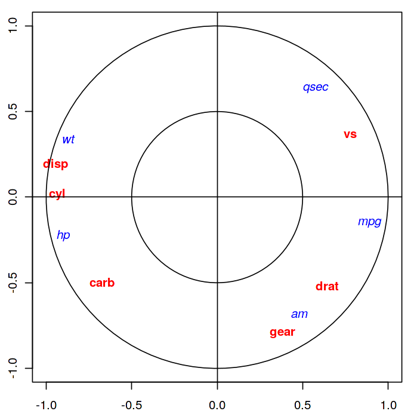
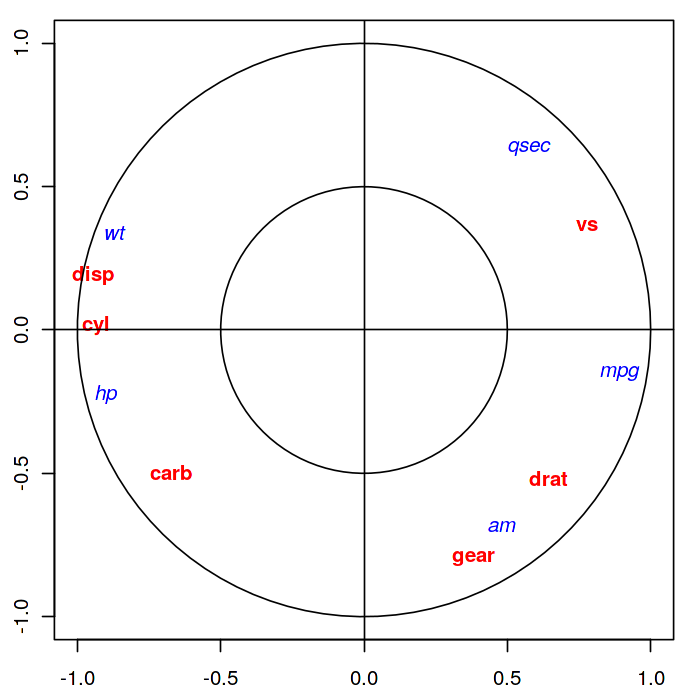

Analyse canonique#
On considère \(n\) individus décrits par deux ensembles de \(p\) et \(q\) variables quantitatives respectivement, où on suppose sans perte de généralité que \(p\leq q\). L’analyse canonique se propose d’examiner les liens existants entre ces deux ensembles afin de savoir s’ils mesurent les mêmes propriétés. On se retreint ici au cas de deux groupes, la généralisation au cas de \(g\) groupes quelconques donnant lieu à l’analyse canonique généralisée.
Formellement on dispose donc de deux matrices \({\bf {\bf X_1}}\in\mathcal{M}_{n,p}(\mathbb{R})\) et \({\bf {\bf X_2}}\in\mathcal{M}_{n,q}(\mathbb{R})\), rassemblées dans une matrice \({\bf X}=\left[{\bf {\bf X_1}}\mid {\bf {\bf X_2}} \right ]\). On supposera \({\bf {\bf X_1}}\) et \({\bf {\bf X_2}}\) de rang plein.
L’étude de la position géométrique relative des sous-espaces \(Im({\bf {\bf X_1}})\) et \(Im({\bf {\bf X_2}})\) permet d’analyser les deux ensembles de variables.
Variables canoniques#
On munit \(\mathbb{R}^n\) d’une métrique \({\bf D}\).
Principe#
La recherche de variables canoniques consiste à rechercher \({\bf {\bf u_1}}\in Im({\bf {\bf X_1}}), \Vert {\bf {\bf u_1}}\Vert=1\) et \({\bf v_1}\in Im({\bf {\bf X_2}})\), \(\Vert {\bf v_1}\Vert=1\) tels que l’angle \(({\bf {\bf u_1}},{\bf v_1})\) est le plus faible. On recherche ensuite \({\bf {\bf u_2}}\in Im({\bf {\bf X_1}}), \Vert {\bf {\bf u_2}}\Vert=1\) orthogonal à \({\bf {\bf u_1}}\) au sens de \({\bf D}\), et \({\bf v_2}\in Im({\bf {\bf X_2}}), \Vert {\bf v_2}\Vert=1\) orthogonal à \({\bf v_1}\) au sens de \({\bf D}\) tels que l’angle \(({\bf {\bf u_2}},{\bf v_2})\) soit minimal. On poursuit cette procédure itérativement pour arriver au dernier couple \(({\bf u_p},{\bf v_p})\).
Formulation matricielle dans \(\mathbb{R}^n\)#
On note \({\bf {\bf {\bf P_i}}},i\in[\![1,2]\!]\) la projection orthogonale (au sens de \({\bf D}\)) sur \(Im({\bf {\bf {\bf X_i}}})\). On sait alors que :
La recherche de \({\bf {\bf u_1}}\) et \({\bf v_1}\) amène à maximiser \(cos({\bf {\bf u_1}},{\bf v_1})\). En utilisant le théorème suivant
Theorem 13 (Théorème de projection)
Soit \(L\) un sous-espace vectoriel de \(\mathbb{R}^n\). Étant donné un point \({\bf y}\in \mathbb{R}^n\), il existe un unique point \({\bf p}\) de \(L\), appelé la projection orthogonale de \({\bf y}\) sur \(L\), tel que \(\|{\bf y}-{\bf p}\|\leq \|{\bf y}-{\bf x}\|,\forall {\bf x}\in L\). Une condition nécessaire et suffisante pour que \({\bf p}\in L\) soit la projection orthogonale de \({\bf y}\) sur \(L\) est \({\bf y}-{\bf p}\in L^\bot\)
On en déduit que \({\bf v_1}\) doit être tel que \({\bf P_1}{\bf v_1}\) soit colinéaire à \({\bf {\bf u_1}}\). De même, \({\bf v_1}\) doit être le vecteur de \(Im({\bf {\bf X_2}})\) le plus proche de \({\bf {\bf u_1}}\) (ou de \({\bf P_1}{\bf v_1}\) qui lui est colinéaire), donc \({\bf v_1}\) doit être colinéaire à \({\bf P_2}{\bf P_1}{\bf v_1}\). Le problème se ramène donc à la recherche des éléments propres de \({\bf P_2}{\bf P_1}\).
Tout d’abord, les vecteurs propres de \({\bf P_2}{\bf P_1}\) sont dans \(Im({\bf {\bf X_2}})\). En effet en multipliant à gauche \({\bf P_2}{\bf P_1}{\bf v_1}=\lambda_1{\bf v_1}\) par \({\bf P_2}\), et puisque \({\bf P_2^2}={\bf P_2}\) (projection), on a immédiatement \({\bf P_2}{\bf P_1}{\bf v_1}=\lambda_1{\bf P_2}{\bf v_1}\) et donc \({\bf P_2}{\bf v_1}={\bf v_1}\in Im({\bf {\bf X_2}})\)
On montre ensuite que \({\bf P_2}{\bf P_1}\) est symétrique (par rapport à \({\bf D}\)). Pour cela, en fonction de la remarque précédente, il suffit de démontrer que pour tout \({\bf x},{\bf y}\in Im({\bf {\bf X_2}})\) (symétrie du produit scalaire engendré par \({\bf D}\))
On a en effet :
\({\bf x}^T{\bf D}{\bf P_2}{\bf P_1}{\bf y}\) =\(({\bf P_2}{\bf x})^T{\bf D}{\bf P_1}{\bf y}\)car \({\bf P_2}\) symétrique
=\({\bf x}^T{\bf D}{\bf P_1}{\bf y}\) car \({\bf x}\in Im({\bf {\bf X_2}})\)
=\(({\bf P_1}{\bf x})^T{\bf D}{\bf y}\) car \({\bf P_1}\) symétrique
=\(({\bf P_1}{\bf x})^T{\bf D}{\bf P_2}{\bf y}\) car \({\bf y}\in Im({\bf {\bf X_2}})\)
=\(({\bf P_2}{\bf P_1}{\bf x})^T{\bf D}{\bf y}\) car \({\bf P_2}\) symétrique
\({\bf P_2}{\bf P_1}\) est donc symétrique, réelle, elle est donc diagonalisable. Elle possède au plus \(min(p,q)\) valeurs propres non identiquement nulles, toutes positives car les \({\bf {\bf P_i}}\) sont des matrices semi définies positives.
On recherche donc maintenant \({\bf v_1}\) tel que \({\bf P_2}{\bf P_1}{\bf v_1}=\lambda_1{\bf v_1}\). Il est immédiat alors que \({\bf {\bf u_1}}\) est vecteur propre de \({\bf P_1}{\bf P_2}\) associé à \(\lambda_1\), qui représente le carré du cosinus de l’angle entre \({\bf v_1}\) et \({\bf {\bf u_1}}\) (donc \(\lambda_1\leq 1\)).
Le cas \(\lambda_1=1\) correspond à \({\bf {\bf u_1}}={\bf v_1}\) et sa multiplicité donne la dimension de \(Im({\bf {\bf X_1}})\bigcap Im({\bf {\bf X_2}})\).
Les vecteurs propres associés à des valeurs propres nulles de rang inférieur à \(q\) engendrent la partie de \(Im({\bf {\bf X_2}})\) orthogonale à \(Im({\bf {\bf X_1}})\). En résumé, dans \(\mathbb{R}^n\), les vecteurs propres \({\bf u_i},{\bf v_i}\) des matrices \({\bf P_1}{\bf P_2}\) et \({\bf P_2}{\bf P_1}\) vérifient :
\({\bf P_2}{\bf P_1}{\bf v_i}=\lambda_i {\bf v_i}\) et \(\sqrt{\lambda_i}{\bf v_i} = {\bf P_2}{\bf u_i}\)
\({\bf P_1}{\bf P_2}{\bf u_i}=\lambda_i {\bf u_i}\) et \(\sqrt{\lambda_i}{\bf u_i} = {\bf P_1}{\bf v_i}\)
\((\forall i\neq j)\quad {\bf v_i}^T{\bf D}{\bf v_j} = {\bf u_i}^T{\bf D}{\bf u_j}={\bf v_i}^T{\bf D}{\bf u_j}=0\)
Formulation matricielle dans les espaces des variables#
D’après la définition des sous-espaces image, il existe \({\bf a_i}\in\mathbb{R}^p,{\bf b_i}\in\mathbb{R}^q\) tels que \({\bf u_i}={\bf {\bf X_1}}{\bf a_i}\) et \({\bf v_i}={\bf {\bf X_2}}{\bf b_i}\). Les \({\bf a_i}\) et \({\bf b_i}\) sont les facteurs canoniques qui se calculent par
soit
Or \(Rg({\bf X_1})=p\) donc l’équation se simplifie en
et de même
Si les variables sont centrées (\({\bf {\bf X_i}}^T{\bf D}{\bf 1} = 0\)), les matrices \({\bf {\bf X_i}}^T{\bf D}{\bf X_j}\) s’interprètent comme des matrices de covariance que l’on note \({\bf V_{ij}} = {\bf {\bf X_i}}^T{\bf D}{\bf X_j}\) et les équations des facteurs canoniques s’écrivent finalement
\( {\bf V_{11}^{-1}}{\bf V_{12}}{\bf V_{22}^{-1}}{\bf V_{21}}{\bf a_i}\)=\(\lambda_i {\bf a_i}\)
\( {\bf V_{22}^{-1}}{\bf V_{21}}{\bf V_{11}^{-1}}{\bf V_{12}}{\bf b_i}\)=\(\lambda_i {\bf b_i}\)
et les \(\lambda_i\) sont les carrés des coefficients de corrélation canonique entre les variables canoniques. Si on impose que les variables canoniques soient de variance unité, on normalise les facteurs par \({\bf a_i}^T{\bf V_{11}}{\bf a_i}=1\) et \({\bf b_i}^T{\bf V_{22}}{\bf b_i}=1\), d’où
Représentation graphique#
Représentation des variables#
On peut représenter indifféremment les variables canoniques de \(Im({\bf {\bf X_1}})\) ou \(Im({\bf {\bf X_2}})\) : on représente pour cela les colonnes de \({\bf X_1}\) et \({\bf X_2}\) en projection sur la base des \({\bf u_i}\) (resp \({\bf v_i}\)).
Par exemple, si l’on s’intéresse à la représentation sur \(Im({\bf {\bf X_1}})\), la projection sur \(Lin({\bf {\bf u_1}},{\bf {\bf u_2}})\) est appelée cercle des corrélations, car, si les colonnes de \({\bf X_1}\) et \({\bf X_2}\) sont normées par rapport à \({\bf D}\), les composantes sur la base des \(({\bf u_i})\) sont les coefficients de corrélation entre variables initiales et variables canoniques. En effet, si on note pour \(k\in[\![1,p]\!]\) \({\bf X_{\bullet,k}}\) la \(k^e\) colonne de \({\bf X_1}\) alors \({\bf X_{\bullet,k}}^T{\bf D}{\bf {\bf u_1}}={\bf X_{.k}}^T{\bf D}{\bf X_1}{\bf a_1}\). Le coefficient de corrélation entre \({\bf X_{\bullet,k}}\) et \({\bf {\bf u_1}}\) est la \(k^e\) composante de \({\bf V_{11}}{\bf a_1}\) car \({\bf X_{\bullet,k}}={\bf X_1}{\boldsymbol \delta_k}\), où \({\boldsymbol \delta_k}\in\mathbb{R}^p\) est le vecteur nul sauf la \(k^e\) composante qui vaut 1.
De même si on note pour \(l\in[\![1,q]\!]\) \({\bf X_{\bullet,l}}\) la \(l^e\) colonne de \({\bf X_2}\) alors \({\bf X_{\bullet,l}}^T{\bf D}{\bf {\bf u_1}}={\boldsymbol \delta_l^T}{\bf X_2}^T{\bf D}{\bf X_1}a_1\), et la corrélation entre \({\bf X_{\bullet,l}}\) et \({\bf u_i}\) est la \(l^e\) composante de \({\bf V_{21}}{\bf a_i}\) ou encore la \(l^e\) composante de \(\sqrt{\lambda_1}{\bf V_{22}}{\bf b_i}\).
Représentation des individus#
Là encore, on peut représenter les individus selon les variables canoniques \({\bf u_i}\) ou \({\bf v_i}\). Dans le plan \(Lin({\bf {\bf u_1}},{\bf {\bf u_2}})\), par exemple, les coordonnées du \(k^e\) point sont les \(k^e\) composantes des variables canoniques \({\bf {\bf u_1}}\) et \({\bf {\bf u_2}}\).
Quelques réflexions autour de l’analyse canonique#
Intérêt théorique#
L’analyse canonique présente un intérêt théorique certain car plusieurs méthodes statistiques très utilisées en sont des cas particuliers.
Cas \(q\)=1#
Si l’on cherche à expliquer \(\mathbf{X_2}\) par \(\mathbf{X_1}\) :
Si \(p\)=1, c’est un problème de régression linéaire
Si \(p>\)1, c’est un problème de régression linéaire multiple
Si \(\mathbf{X_1}\) est constitué d’une ou plusieurs variables qualitatives, on aboutit à un modèle d’analyse de la variance
Si \(\mathbf{X_1}\) est constitué de variables qualitatives et quantitatives, on aboutit à un modèle d’analyse de la covariance
Dans tous ces cas, le problème est de maximiser le coefficient de corrélation entre une variable quantitative et un ensemble de variables, c’est donc bien un problème d’analyse canonique.
Cas général#
L’analyse Factorielle Discriminante est le cas particulier de l’analyse canonique pour lequel \(\mathbf{X_1}\) décrit un ensemble de variables quantitatives et \(\mathbf{X_2}\) une variable qualitative
L’Analyse Factorielle des correspondances est l’instantiation d’une analyse canonique dans laquelle \(\mathbf{X_1}\) et \(\mathbf{X_2}\) décrivent les modalités d’une variable qualitative.
Limites#
L’analyse canonique décrit les relations linéaires existant entre deux ensembles de variables : les premières étapes mettent en évidence les directions de l’espace des variables selon lesquelles les deux ensembles sont les plus proches. Mais il est possible que les variables canoniques soient faiblement corrélées aux variables des tableaux \(\mathbf{X_1}\) et \(\mathbf{X_2}\), elles deviennent dans ce cas difficilement interprétables. Les variables d’origine n’interviennent en effet pas dans les calculs de détermination des composantes canoniques, seuls comptent les projecteurs sur les espaces engendrés par ces variables.
Exemple#
On s’intéresse au jeu de données mtcars, qui décrit 32 voitures à l’aide de 11 paramètres quantitatifs. Ces paramètres peuvent être classés en deux catégories, l’une (\(\mathbf{X_1}\)) relative à des performances de conduite (puissance, consommation, …), l’autre (\(\mathbf{X_2}\)) plus reliée aux caractéristiques de l’automobile (nombre de cylindres, nombre de carburateurs,…). L’objectif est de voir s’il existe un lien entre ces deux ensembles de variables.
La projection des individus (les voitures) dans le plan \(\mathbf u_1,\mathbf u_2\) est donnée dans la figure suivante. A gauche, la projection des individus dans (\(\mathbf u_1,\mathbf u_2\)), à droite la projection des variables sur le cercle des corrélations. Les variables de \(\mathbf{X_1}\) sont représentées en rouge, celles de \(\mathbf{X_2}\) en bleu
 

Ce plan identifie deux extrêmes : les grandes voitures (en bas à gauche) et les petites voitures (en haut à droite). La corrélation des données sur ce plan est de 0.98, une relation linéaire semble donc évidente entre ces deux groupes.
La projection des variables sur le cercle des corrélations montre que toutes les variables sont expressives (près du cercle).